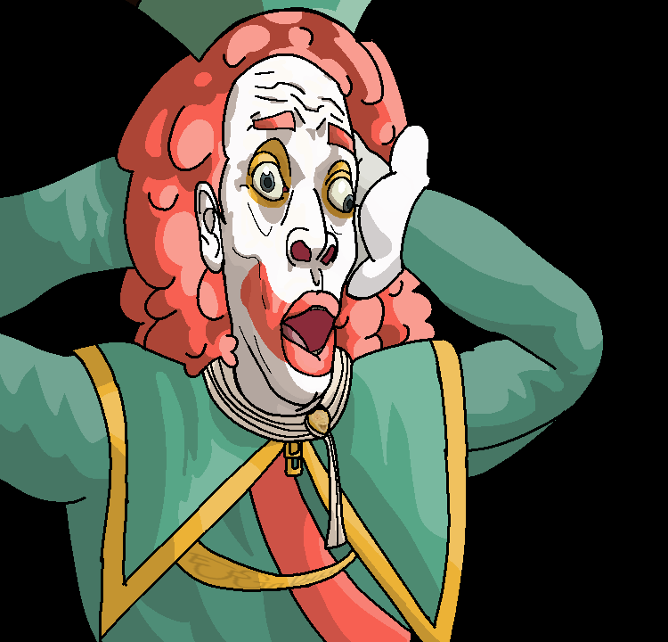

Sobre mi persona
Bueno, soy estudiante de la Universidad Nacional de Ingeniería, que está en Nicaragua. Estudio Ingeniería de Sistemas, donde aprendo mucho de desarrollo de software y el funcionamiento de los sistemas, también trabajo mucho en proyectos que me han ayudado a entender mejor esta bella carrera. Personalmente disfruto de todo lo relacionado a la administración.
Intereses y habilidades
- Desarrollo de sistemas web
- Administración de proyectos
- Programación en general
- Trabajo en equipo
- Dibujar
- Escribir
Un dibujo mío

¿Qué me gusta?
- Jugar videojuegos. Me gusta una gran variedad de ellos.
- Dibujar. Siempre me ha gusto mucho hacer todo tipo de dibujos, aunque no sea el mejor en eso.
- Escribir. La redacción correcta y también escribir historias son cosas que me atraen mucho.
- Programar. Aunque no sea mi pasatiempo favorito, me gusta mucho programar y crear cosas con código.